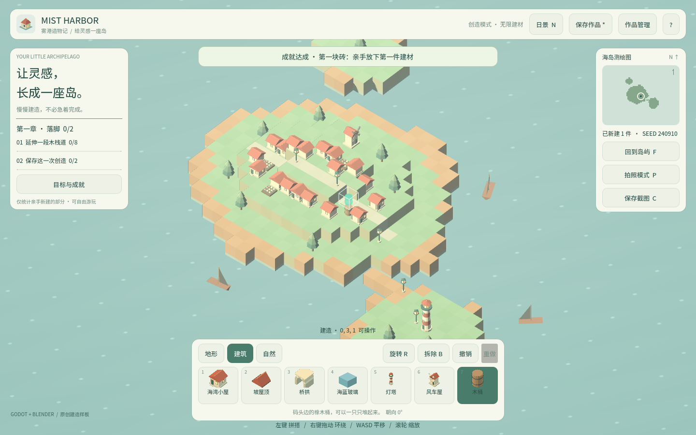
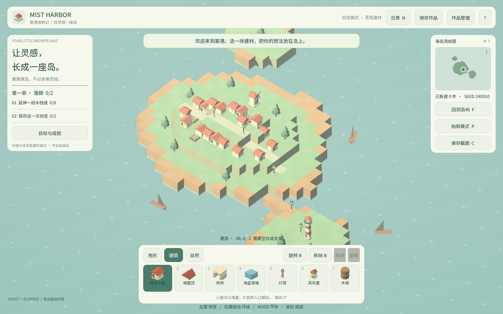

卷 3 · 第 15 章 远程 Blender MCP：submit → observe → artifacts
本章目标：理解异步作业模型——为什么提交后要轮询、任务 id 为什么绑定脚本摘要、
产物为什么要校验 sha256。
对应任务：T12（自动化管线） | 对应服务：web-cb-blender-pilot（远程 streamableHttp）
15.1 为什么用远程，而不是本地 Blender MCP
| 本地 Blender MCP | 远程 pilot |
|---|---|
| --- | --- |
插件拒绝后台模式：blender -b 下主循环定时器不跑，命令会挂 | 服务端本就无头，天然适合自动化 |
| 必须 GUI 启动并保持窗口 | 无需本地 Blender |
| 每台机器都要装插件、开端口 9876 | 一次配置，处处可用 |
| 本机 Blender 4.2 | 服务端 Blender 5.2.1（Linux x86_64） |
结论：本地插件适合人交互式建模，远程服务适合流水线。本实训的资产管线选后者。
15.2 五类工具，三种角色
| 工具 | 角色 | 说明 |
|---|---|---|
| --- | --- | --- |
blender_doctor | 探能力 | 返回服务端版本、限制、必须遵循的脚本模板 |
blender_submit | 提交 | 内联脚本（≤256 KiB），返回立即，任务进队列 |
blender_observe | 轮询 | 查状态，直到进入终端态 |
blender_cancel | 取消 | 放弃一个跑偏的任务 |
blender_artifacts | 取产物 | 列文件清单（含 sha256、下载路径） |
第一步永远是 doctor：它给出的 authoring.template.script 就是第 14 章那四条契约的出处。
先看模板再写脚本，不要凭记忆写。
15.3 提交：任务 id 必须唯一，而且要有意义
task_id = f"mist-harbor-{args.id}-v{version}-{sha256(script).hexdigest()[:8]}"
if args.retry:
task_id += f"-r{int(time.time())}" # 失败过的 id 在服务端仍被占用| 设计 | 原因 |
|---|---|
| --- | --- |
| 服务端拒绝重复 task_id | 重跑同样的脚本会产生冲突 |
| 绑定脚本摘要（sha8） | 脚本没改 → 复用同一个任务；脚本改了 → 自动产生新任务 |
--retry 加时间戳 | 失败任务的 id 在服务端仍然"已占用"，必须换新 |
📌 这是"内容寻址"思路的小应用：让 id 反映内容，重复与变更就自动区分开了。
15.4 轮询：没有回调，只能等
deadline = time.time() + args.timeout + 120
while time.time() < deadline:
observed = pilot.call("blender_observe", {"task_id": task_id})
state = str(observed.get("state") or observed.get("status") or "")
if state in TERMINAL_STATES:
break
time.sleep(5)
if state != "succeeded":
explain_failure(pilot, task_id)- 间隔 5 秒，总上限
timeout + 120 - 失败时调
explain_failure()抓取服务端的错误细节——别只看"失败了" - 失败后
--retry重跑（会换 id）
15.5 取产物：下载要带同一个 Authorization，且必须校验
glb = pick_artifact(files, {"model","asset","glb","mesh"}, (".glb",))
glb_bytes = pilot.download(glb["download_path"])
if glb.get("sha256") and sha256(glb_bytes).hexdigest() != glb["sha256"]:
fail("GLB sha256 mismatch")两个要点：
- 产物下载必须与 MCP 调用带同一个
Authorization头——否则 401 - sha256 必校验：网络传输、截断、缓存错误都会在"看起来成功"的情况下给出坏文件
关于 role 字段
def pick_artifact(files, roles, suffixes):
for f in files:
if str(f.get("role") or "").lower() in roles: # 优先按 role
return f
for f in files:
if str(f.get("path","")).lower().endswith(suffixes): # 回退按后缀
return f这是我们给同事提的建议（已采纳）：清单每项带role ∈ {model/asset, preview/render, receipt/inspect, log}，
客户端就不必靠扩展名猜。实现上先 role 后后缀，服务端上线前后都能工作。
15.6 凭据不要进仓库
tools/pilot.example.json ← 模板（入库，占位值）
.codebuddy/local/pilot.json ← 真实端点与令牌（.gitignore 忽略）pilot_config() 优先读本地文件，读不到就报明确错误并提示复制模板。
原则同第 03 章的 tools.example.json：模板入库，秘密不入库。
🌩 在云端 agent（web-cb）里是什么样
| 🖥 本地路线 | 🌩 云端 agent（web-cb） | |
|---|---|---|
| --- | --- | --- |
| 调用方式 | 脚本直连 HTTP + JSON-RPC | 平台内原生调用 MCP 工具（含远程 pilot） |
| 凭据 | 本地文件 | 平台托管 |
| 等待 | Python 轮询 | 平台同样需要等待，建议封装成"一步命令" |
| 产物 | 下载到本地 | 平台产物面板 + 可下载 |
| 稳定性 | 受本机网络影响 | 云端到云端通常更快更稳 |
🌩 云端用 MCP 时最需要注意的是异步：一次调用不返回最终结果，
必须有明确的"轮询—超时—失败解释"三步，否则流水线会卡死或静默产出空文件。
15.7 常见坑速查（本章）
| 现象 | 原因 | 处理 |
|---|---|---|
| --- | --- | --- |
| 提交报重复 id | task_id 撞了 | 绑定脚本摘要；失败后 --retry |
| 轮询一直不结束 | 没判终端态 / 超时太短 | 用 TERMINAL_STATES + 总上限 |
| 下载 401 | 忘了带 Authorization | 下载与 MCP 调用同头 |
| 产物损坏但流程报成功 | 没校验 sha256 | 必校验 |
| 找不到 GLB | 靠后缀猜错了 | 用 role 优先的 pick_artifact |
| 脚本不被接受 | 超过 256 KiB 或不符合模板 | 先跑 doctor 读模板 |
15.8 本章作业
- 说出五类工具的分工，以及为什么第一步必须是
doctor - 解释 task_id 绑定脚本摘要的好处，并举出两个会踩坑的场景
- 说明为什么产物必须校验 sha256
- 用
blender_doctor取一次模板，对照第 14 章的四条契约，指出模板里对应的要求
🎓 教学提示（给教师 / 直播主）
- 概念锚点：异步作业 = 提交 + 轮询 + 取结果，和"函数调用"完全不同的心智模型。
- 课堂演示：提交一个脚本，现场看 observe 的状态变化序列。
- 高频误解：学生把 MCP 调用当作同步函数。强调：返回快 ≠ 完成。
- 讨论题：如果服务端提供回调（webhook），这段轮询代码该怎么改？
- 批改要点：作业 2 要答出"重复 id"与"失败 id 仍占用"两个场景。
🖼 本章图集


📹 录屏分镜（9 分钟）
| 时间 | 画面 | 解说词要点 |
|---|---|---|
| --- | --- | --- |
| 00:00–01:30 | 本地 vs 远程对照表 | "本地插件拒绝后台，远程生而无头。" |
| 01:30–02:40 | doctor 返回的模板 | "先看模板，再写脚本。" |
| 02:40–04:00 | 提交 + task_id 绑定 sha8 | "让 id 反映内容。" |
| 04:00–05:30 | 轮询循环 + 失败解释 | "返回快不等于完成。" |
| 05:30–07:00 | 下载 + sha256 校验 + role 字段 | |
| 07:00–09:00 | 凭据不入库 + 作业 |
🎬 视频位（待录制）
把录好的视频放到course/media/video/15/（mp4 / webm / mov），重新执行 python tools/course_build.py 即会自动内嵌；首帧默认用本章第一张截图作为封面。分镜脚本见上一节。🖼 配图清单
| 文件名 | 内容 | 生成方式 |
|---|---|---|
| --- | --- | --- |
15-game-start.png | 起始画面（管线产物的最终落点） | python tools/course_capture.py --chapter 15 |
15-barrel-placed.png | 放置一件由远程管线产出的木桶 | 同上 |
🎥 直播脚本（L3 片段，10 分钟）
- 开场："如果调用一个工具要等 30 秒，你会怎么写代码？"——引出异步
- 演示：现场 submit → observe（看状态序列）→ artifacts（校验 sha256）
- 互动：让观众设计 task_id 命名规则，点评"内容寻址"的优劣
- 收尾：预告一条命令进游戏
❓ 本章 FAQ
Q：能不能一次提交多件资产？
A：当前是一件一个任务。批量由上层脚本循环调用（第 16 章的管线就是）。
Q：任务失败后 id 为什么不能复用？
A：服务端保留记录以免结果混淆；所以 --retry 会追加时间戳生成全新 id。
Q：远程服务版本比本地新，脚本会不兼容吗？
A：只要遵守 doctor 给的契约模板就不会；这也是为什么先读模板再写。